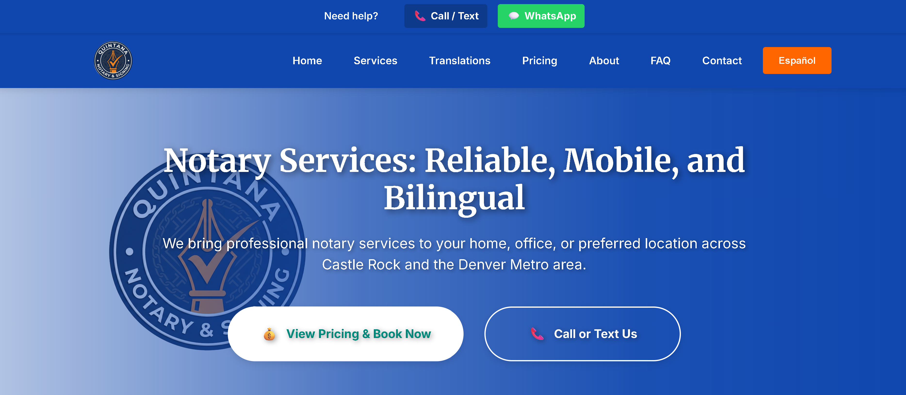
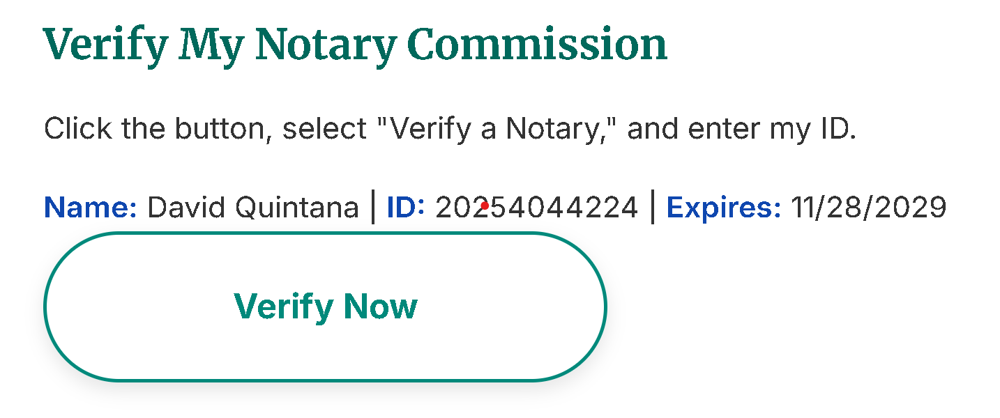
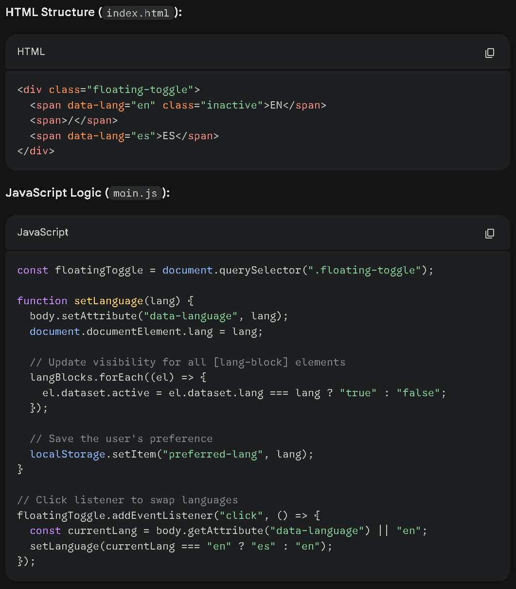
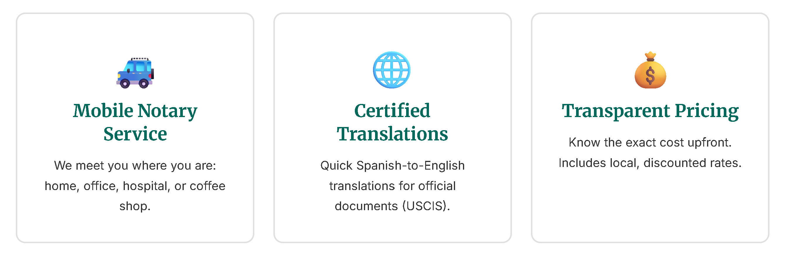
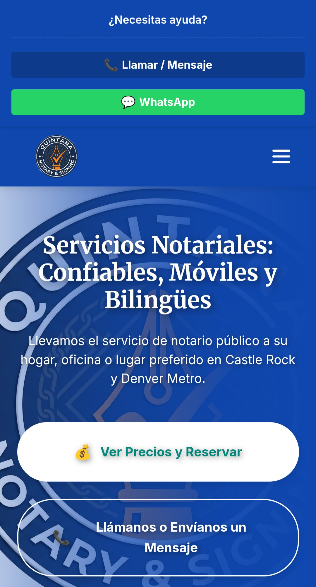
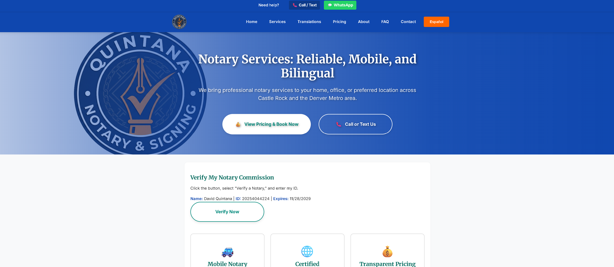
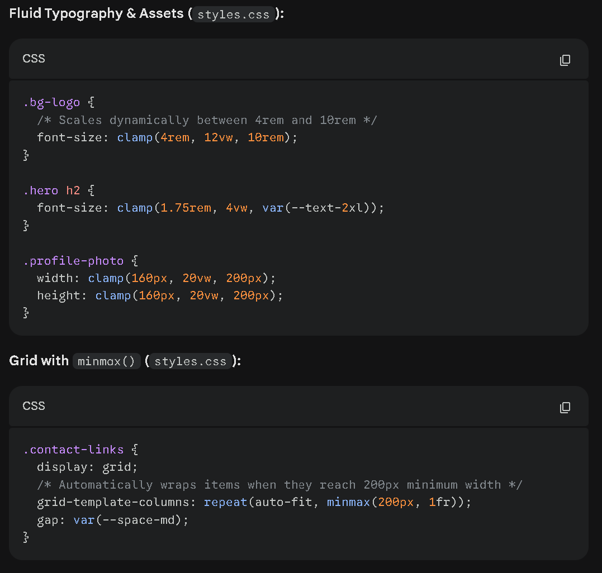
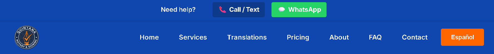
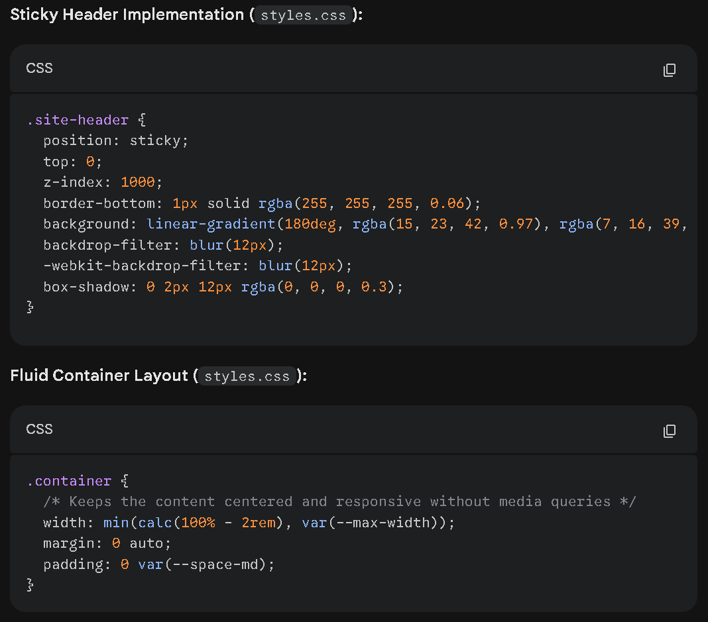

Quintana Notary & Signing: Building Trust Through Transparent Design
A comprehensive case study exploring how plain-language communication, mobile-first design, and front-and-center verification create a trustworthy digital presence for mobile notary services.
Quintana Notary & Signing: Construyendo Confianza a Través del Diseño Transparente
Un caso de estudio exhaustivo que explora cómo la comunicación en lenguaje sencillo, el diseño móvil-primero y la verificación frontal crean una presencia digital confiable para servicios notariales móviles.

Project Overview
Purpose
Created as the official digital presence for my mobile notary business in Colorado. The goal was to build a platform that feels trustworthy, simple, and welcoming — especially for clients who may not be tech-savvy or familiar with legal terminology.
Goals
Build immediate trust through transparent verification, explain notary services in clear everyday language, ensure full mobile usability for older adults and busy families, support bilingual English/Spanish content, and reduce confusion and unnecessary phone calls.
Descripción del Proyecto
Propósito
Creado como la presencia digital oficial para mi negocio de notario móvil en Colorado. El objetivo era construir una plataforma que se sienta confiable, simple y acogedora, especialmente para clientes que pueden no ser expertos en tecnología o estar familiarizados con la terminología legal.
Objetivos
Construir confianza inmediata mediante verificación transparente, explicar servicios notariales en lenguaje cotidiano claro, asegurar usabilidad móvil completa para adultos mayores y familias ocupadas, apoyar contenido bilingüe inglés/español, y reducir la confusión y llamadas telefónicas innecesarias.
Trust-First Verification System
One of the core features of the site is a custom verification banner that displays my full name, Commission ID, commission expiration date, and a button linking directly to the Colorado Secretary of State's official notary search.
Why This Matters
- Most notary websites bury or omit verification details
- Clients can confirm credentials in seconds — no searching, no guessing
- Front-and-center placement builds immediate trust
- Dramatically reduces skepticism and increases conversions
- Sets service apart from competitors who hide verification
By placing verification at the top of every page, clients see proof of legitimacy before they even read about services. This removes friction and positions the business as transparent and professional.

Verification banner (click to zoom)

Verification system code (click to zoom)
Sistema de Verificación Centrado en la Confianza
Una de las características principales del sitio es un banner de verificación personalizado que muestra mi nombre completo, ID de comisión, fecha de vencimiento de comisión y un botón que enlaza directamente a la búsqueda oficial de notarios del Secretario de Estado de Colorado.
Por qué es importante
- La mayoría de sitios web de notarios ocultan o omiten detalles de verificación
- Los clientes pueden confirmar credenciales en segundos — sin búsquedas, sin conjeturas
- La colocación frontal genera confianza inmediata
- Reduce dramáticamente el escepticismo y aumenta las conversiones
- Diferencia el servicio de competidores que ocultan la verificación
Al colocar la verificación en la parte superior de cada página, los clientes ven prueba de legitimidad antes de leer sobre los servicios. Esto elimina fricción y posiciona el negocio como transparente y profesional.
Banner de verificación (clic para ampliar)
Código del sistema de verificación (clic para ampliar)
Plain-Language Service Explanations
Notary terminology is confusing. Terms like acknowledgment, jurat, or oath/affirmation mean nothing to most clients. I rewrote every service description using short sentences, everyday vocabulary, and clear steps.
My Approach
- Explain what clients need to bring
- Describe what I check
- State how long it takes
- Use examples instead of legal jargon
- Break complex processes into simple steps
Before: "An acknowledgment is a notarial act in which the signer acknowledges executing the document."
After: "I confirm your identity and watch you sign the document. You bring your ID, I verify it, and we complete the form together."

Service cards (click to zoom)
Explicaciones de Servicios en Lenguaje Sencillo
La terminología notarial es confusa. Términos como reconocimiento, juramento o afirmación no significan nada para la mayoría de los clientes. Reescribí cada descripción de servicio usando oraciones cortas, vocabulario cotidiano y pasos claros.
Mi Enfoque
- Explicar qué deben traer los clientes
- Describir qué verifico
- Indicar cuánto tiempo toma
- Usar ejemplos en lugar de jerga legal
- Dividir procesos complejos en pasos simples
Antes: "Un reconocimiento es un acto notarial en el que el firmante reconoce la ejecución del documento."
Después: "Confirmo su identidad y lo veo firmar el documento. Usted trae su identificación, yo la verifico, y completamos el formulario juntos."
Tarjetas de servicio (clic para ampliar)
Mobile-First, Accessible UI
I designed the entire site mobile-first because most clients find me on their phones. The layout uses CSS Flexbox and Grid, clamp() for responsive typography, large 44px+ tap targets, and high contrast.
Mobile (320px-768px)
Single-column layout, large buttons, simplified navigation
Tablet (768px-1024px)
Two-column service cards, balanced spacing
Desktop (1024px+)
Wider layouts, more whitespace, centered content blocks

Mobile View (375px)

Desktop View (1440px)

Responsive design code (click to zoom)
Interfaz Móvil-Primero y Accesible
Diseñé todo el sitio móvil-primero porque la mayoría de los clientes me encuentran en sus teléfonos. El diseño usa CSS Flexbox y Grid, clamp() para tipografía responsive, objetivos táctiles grandes de 44px+ y alto contraste.
Móvil (320px-768px)
Diseño de una columna, botones grandes, navegación simplificada
Tableta (768px-1024px)
Tarjetas de servicio de dos columnas, espaciado equilibrado
Escritorio (1024px+)
Diseños más amplios, más espacio en blanco, bloques de contenido centrados
Vista Móvil (375px)
Vista de Escritorio (1440px)
Código de diseño responsive (clic para ampliar)
Instant Contact System
Every page includes a sticky contact bar with call, text, and WhatsApp buttons. Clients never have to scroll or search for how to reach me — the help bar is always available.
Why This Matters
- Older adults often struggle to find contact information
- Removes friction and increases conversions
- Supports multiple communication preferences
- Always visible regardless of scroll position
- One-tap access to phone, SMS, and WhatsApp
The sticky bar eliminates the most common question: "How do I contact you?" Clients can reach out instantly without navigating menus or searching for hidden contact forms.

Sticky contact bar (click to zoom)

Contact bar implementation code (click to zoom)
Sistema de Contacto Instantáneo
Cada página incluye una barra de contacto fija con botones de llamada, texto y WhatsApp. Los clientes nunca tienen que desplazarse o buscar cómo contactarme — la barra de ayuda siempre está disponible.
Por qué es importante
- Los adultos mayores a menudo tienen dificultades para encontrar información de contacto
- Elimina fricción y aumenta las conversiones
- Apoya múltiples preferencias de comunicación
- Siempre visible independientemente de la posición de desplazamiento
- Acceso de un toque a teléfono, SMS y WhatsApp
La barra fija elimina la pregunta más común: "¿Cómo me comunico contigo?" Los clientes pueden contactar instantáneamente sin navegar menús o buscar formularios de contacto ocultos.
Barra de contacto fija (clic para ampliar)
Código de implementación de barra de contacto (clic para ampliar)
Bilingual-Ready Architecture
While the site currently displays English content, I built the architecture to support full bilingual functionality using clean content separation, consistent HTML structure, and easy duplication for Spanish pages.
Why This Matters
- A large portion of clients prefer Spanish
- Site is ready to expand without redesigning layout
- SEO-friendly bilingual metadata already in place
- Consistent structure makes translation straightforward
- Future-proofs the site for community growth
Bilingual-ready structure (click to zoom)
Arquitectura Lista para Bilingüe
Aunque el sitio actualmente muestra contenido en inglés, construí la arquitectura para soportar funcionalidad bilingüe completa usando separación limpia de contenido, estructura HTML consistente y duplicación fácil para páginas en español.
Por qué es importante
- Una gran porción de clientes prefiere español
- El sitio está listo para expandirse sin rediseñar el diseño
- Metadatos bilingües amigables para SEO ya están en su lugar
- La estructura consistente hace la traducción directa
- Prepara el sitio para el futuro crecimiento de la comunidad
Estructura lista para bilingüe (clic para ampliar)
Technical Highlights & Impact
Zero Dependencies
Built with pure HTML5, CSS3, and vanilla JavaScript — no frameworks, no libraries, no bloat
Performance
Fast load times with optimized images and minimal scripts
Accessibility
High contrast, large tap targets, clear headings, plain language, logical reading order
Trust-Building
Clients verify notary status instantly — fewer questions, more confidence
Mobile Optimization
Older adults and busy families navigate confidently on any device
SEO Optimized
Semantic structure, descriptive alt text, local business metadata, clear service keywords
Aspectos Técnicos Destacados e Impacto
Cero Dependencias
Construido con HTML5, CSS3 y JavaScript puro — sin frameworks, sin librerías, sin sobrecarga
Rendimiento
Tiempos de carga rápidos con imágenes optimizadas y scripts mínimos
Accesibilidad
Alto contraste, objetivos táctiles grandes, encabezados claros, lenguaje sencillo, orden de lectura lógico
Construcción de Confianza
Los clientes verifican el estado de notario instantáneamente — menos preguntas, más confianza
Optimización Móvil
Adultos mayores y familias ocupadas navegan con confianza en cualquier dispositivo
Optimizado para SEO
Estructura semántica, texto alt descriptivo, metadatos de negocio local, palabras clave de servicio claras
Contact
Have a project in mind or need bilingual consulting?
Contacto
¿Tienes un proyecto en mente o necesitas asesoría bilingüe?